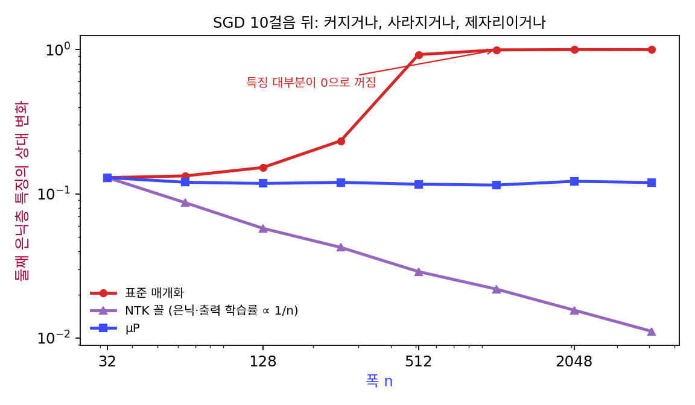

μP: 특징이 폭과 상관없이 같은 크기로 움직이게
두 극단을 보았다. 표준 매개화에서는 넓을수록 한 걸음이 출력을 폭에 비례해 흔들어, 학습률을 계속 줄여야 했다. 학습률을 폭에 반비례로 줄이면 출력은 얌전해지지만, 폭이 넓을수록 은닉 특징이 처음 값에 얼어붙었다. 그 사이 어딘가에, 출력은 터지지 않으면서 은닉 특징은 폭과 상관없이 같은 크기로 움직이는 규칙이 있을까? 있다면 층마다 무엇을 다르게 해야 할까?
역사: 텐서 프로그램 넷째 논문
그레그 양은 2019년부터 「텐서 프로그램(Tensor Programs)」이라는 이름으로 논문을 이어 냈다. 무작위 행렬과 벡터의 곱을 되풀이하는 계산이 폭을 무한대로 보낼 때 어떻게 되는지를 한 가지 틀로 계산하는 연구다. 넷째 논문이 「무한 폭 신경망의 특징 학습」(양·휴, 2020년 11월 arXiv, ICML 2021)이다. 그들은 초기화와 층별 학습률을 폭의 거듭제곱으로 붙이는 규칙들을 한데 모아 놓고, 그 가운데 어느 것이든 무한 폭에서 특징을 배우거나 커널로 굳거나 둘 가운데 하나이고 둘 다일 수는 없다는 것을 보였다. 표준 매개화와 신경 탄젠트 커널 꼴은 특징을 배우는 극한이 없다. 그래서 표준 매개화를 조금 고친 규칙을 냈고, 폭이 무한해도 특징이 터지지 않는 한에서 가장 크게 움직인다는 뜻으로 「최대 갱신 매개화」라고 불렀다. Word2Vec 에서 도시와 주의 벡터가 넓을수록 저절로 갈라진 쪽이 그 규칙이고, 무작위로 흩어진 쪽이 신경 탄젠트 커널이었다.
세 가지 규칙으로 특징 재기
먼저 세 규칙에서 특징이 실제로 얼마나 움직이는지 재 보자. 입력 16차원, 은닉층 둘(폭 n, ReLU), 출력 하나인 망을 확률적 경사하강(SGD)으로 10걸음 학습한 뒤, 둘째 은닉층의 특징이 처음보다 얼마나 바뀌었는지를 처음 크기에 대한 비로 쟀다. 셋 모두 폭 32 에서는 똑같은 망이 되도록 맞췄다.
| 폭 n | 표준 매개화 | 은닉·출력층 학습률 ∝ 1/n (신경 탄젠트 커널 꼴) | μP |
|---|---|---|---|
| 32 | 0.130 | 0.130 | 0.130 |
| 256 | 0.233 | 0.042 | 0.120 |
| 1,024 | 0.996 | 0.022 | 0.115 |
| 4,096 | 1.000 | 0.011 | 0.120 |
표준 매개화에서는 넓을수록 변화가 커지다가 폭 1,024 에서 1 에 붙는다. 특징이 처음 값의 100% 만큼 바뀌었다는 것은 특징을 잘 배웠다는 뜻이 아니다. 둘째 은닉층에서 값이 0 인(꺼진) 칸의 비율이 학습 전 0.501 에서 10걸음 뒤 0.995 로, 걸음이 너무 커서 거의 모든 뉴런이 꺼져 버린 것이다. 폭 4,096 의 첫째 은닉층은 처음 크기의 1.5배만큼 흔들렸다. 학습률을 폭에 반비례로 줄인 쪽은 0.130 에서 0.011 로, 폭이 128배가 될 때 11.7분의 1이 되어 1/√n으로 얼어붙는다. 세 번째 열만 폭과 상관없이 0.12 언저리에 머문다.

세 번째 열의 규칙은 층마다의 사정에서 나온다. 은닉층의 가중치 행렬 W(n × n)가 한 걸음에 받는 SGD 갱신은 역전파로 돌아온 신호 δ와 그 층에 들어온 특징 h의 바깥곱 −η δhᵀ 이다. 성분 하나하나는 작다. 특징이 좌표마다 1 정도이고 δ가 좌표마다 1/n 정도라면 성분은 η/n이다. 그러나 이 행렬은 랭크가 1 이라 모든 성분이 한 방향으로 줄을 서 있고, 그 방향의 벡터를 n칸 모두 같은 쪽으로 민다. 폭 n 층 하나에서 본 「같은 쪽으로 미는 합」이 행렬에서 다시 나온 것이다. 행렬이 벡터를 가장 많이 늘리는 배율, 곧 가장 큰 특잇값을 스펙트럼 노름이라 한다. 성분 하나는 η/n로 작아도, 성분 n²개가 한 방향으로 줄을 선 이 행렬은 그 방향의 벡터를 폭이 넓어져도 줄지 않는 배율로 늘린다. 그 배율이 정확히 얼마인지는 아래 문제에서 직접 셈해 본다. 그래서 은닉층은 SGD 학습률을 폭에 맞춰 줄이지 않아도 되고, 줄이면 오히려 특징이 얼어붙는다. 입력층과 출력층은 들어오고 나가는 쪽 가운데 한쪽만 폭이라 셈이 달라진다.
양과 휴의 규칙을 정리한 「Tensor Programs V」의 표 3 은 다음과 같다(괄호 안은 표준 매개화). fan_in 은 그 층에 들어오는 입력의 수, fan_out 은 나가는 출력의 수다.
| 입력층 가중치와 모든 편향 | 은닉층 가중치 | 출력층 가중치 | |
|---|---|---|---|
| 초기화 분산 | 1/fan_in | 1/fan_in | 1/fan_in² (1/fan_in) |
| SGD 학습률 | fan_out (1) | 1 | 1/fan_in (1) |
| Adam 학습률 | 1 | 1/fan_in (1) | 1/fan_in (1) |
이렇게 층마다 초기화와 학습률을 폭의 거듭제곱으로 붙여, 폭이 무한해도 각 층의 특징이 한 걸음에 폭과 상관없는 크기만큼 움직이게 하는 규칙을 μP (특징이 폭과 상관없이 같은 크기로 움직이게 하는 매개화 / maximal update parametrization, 최대 갱신 매개화)라 한다. 「뮤피」라고 읽는다. 출력층의 초기화를 표준보다 1/fan_in 배 더 작게 잡는 것은 학습을 시작할 때 출력층이 무작위로 큰 값을 내 은닉층으로 큰 신호를 돌려보내지 않게 하려는 것이다. 표에서 SGD 와 Adam 의 은닉층 칸이 다른 까닭은 바로 아래에서 본다.
2023년에 양은 제임스 사이먼(James Simon), 제러미 번스타인(Jeremy Bernstein)과 함께 이 표를 스펙트럼 노름 하나로 묶었다(「특징 학습의 스펙트럼 조건(A Spectral Condition for Feature Learning)」).
들어오는 벡터의 좌표가 하나하나 1 정도라면 그 벡터의 길이는 √nin 이고, 나가는 벡터도 좌표마다 1 정도가 되려면 길이가 √nout 이어야 한다. 가중치와 그 갱신이 벡터를 늘리는 배율이 √(nout/nin) 이면 그렇게 된다. 은닉층은 nin = nout 이라 둘 다 폭과 상관없는 크기여야 하고, 한 방향으로 줄을 선 랭크 1 갱신이 폭을 따라 줄지 않는 배율로 늘린다는 것이 바로 그 조건과 이어진다. 이 조건을 「피셔 정보로 잰 한 걸음을 폭과 상관없이 같게」 하는 처방으로 읽고 싶어지지만, 그것은 나중에 붙인 해석이다. μP 의 유도는 피셔 계량에서 출발하지 않았고, 출력만이 아니라 모든 은닉층의 특징 변화를 맞춘다는 점에서 같은 말도 아니다.
ML에서: Adam 의 은닉층은 왜 1/fan_in 인가
표 3 에서 SGD 의 은닉층 학습률은 1 인데 Adam 은 1/fan_in 이다. Adam 의 첫 걸음은 기울기의 부호라서, 성분마다 크기가 ±η로 같아진다. 기울기의 크기는 지웠지만, 칸들이 한 방향으로 줄을 서는 성질은 부호를 취해도 그대로 남는다. 그 걸음의 스펙트럼 노름이 폭에 따라 어떻게 자라는지가 Adam 칸의 1/fan_in 을 정하는데, 그 셈은 아래 문제로 남겨 둔다. 마이크로소프트가 공개한 파이토치 라이브러리 mup 는 이 표를 코드로 옮긴 것이다. 기준이 되는 작은 망과 견주어 매개변수마다 어느 차원이 폭인지 적어 두고(set_base_shapes), 출력층을 MuReadout 으로 바꾸고, 옵티마이저를 MuAdam 이나 MuSGD 로 바꾸면 층마다 학습률이 표대로 붙는다.
문제 7. 두 노름으로 잰 은닉층
폭 n인 은닉층 W(n × n)를 성분마다 분산 1/n인 정규분포로 초기화한다. (가) n = 256, 1,024, 4,096 에서 프로베니우스 노름 ‖W‖_F(성분 제곱합의 제곱근)와 스펙트럼 노름 ‖W‖₂ 를 구하라. 은닉층의 스펙트럼 조건(폭과 상관없는 크기)과 맞는 것은 어느 쪽인가? (나) 역전파 신호 δ의 좌표가 ±1/n, 들어오는 특징 h의 좌표가 ±1 이다. SGD 한 걸음 ΔW = −ηδhᵀ 에서 η = 1 일 때 성분 하나의 크기와 ‖ΔW‖₂ 는 n에 따라 어떻게 되는가? (다) 폭 n 층 하나(출력 하나)는 표 3 의 어느 칸이고, 그 칸의 SGD 학습률은 그 층에서 오차가 끝없이 커지지 않는 범위 0 < η < 2/n과 맞는가?

(가)는 성분 하나가 1/√n 크기고 성분이 n²개니까 프로베니우스는 √(n² × 1/n) = √n이요. 256 이면 16, 4,096 이면 64. 실제로 15.96, 32.01, 63.99 가 나와요. 넓을수록 큰 행렬이에요.

스펙트럼 노름도 그만큼 커지나요? 재 봐요.

np.linalg.norm(W, 2) 로 재니까 1.968, 1.994, 1.996 이요. 프로베니우스는 네 배가 됐는데 스펙트럼은 2 근처에 멈춰 있어요.

프로베니우스는 모든 방향으로 늘리는 배율을 제곱해 더한 거라 방향 수만큼 커지고, 스펙트럼은 가장 많이 늘리는 한 방향만 봐. 무작위 행렬은 어느 한 방향으로 몰아서 늘리지 않으니까 한 방향은 2 정도에 머물러. 은닉층은 √(nout/nin) = 1 이니까 조건과 맞는 건 스펙트럼 노름이야.

갱신 쪽은요? 성분 하나가 얼마나 작은지부터 봐요.
성분 하나가 1 × (1/n) × 1 = 1/n이에요. 4,096 이면 0.000244. 넓은 층에서는 갱신이 거의 없는 거나 마찬가지죠.

ΔW가 바깥곱이라 랭크가 1 이잖아. 스펙트럼 노름이 ‖δ‖·‖h‖ = (√n/n)·√n = 1 이야. 재 보니 세 폭 모두 1.0000. 성분은 1/n로 작아지지만 그 n²개가 한 방향으로 줄을 서 있어서, 그 방향으로는 폭과 상관없는 크기만큼 늘려. 들어온 특징 h에 곱하면 좌표마다 1 정도의 변화가 나오고.

(다)는요? 출력이 하나인 그 층은 입력 쪽이 폭이었죠.

fan_in = n인 출력층이니까 SGD 학습률 1/fan_in 이요. 끝없이 커지지 않는 범위가 2/n 아래였으니, 1/n은 그 안에서 한 걸음에 오차를 0 으로 보내는 값이네요. 표가 처음 보았던 그 층의 계산이랑 맞아요.

조원들이 다들 같은 방향으로 한 줄씩만 고쳐도 보고서 전체로는 한쪽으로 크게 바뀌는 거죠. 성분이 작다고 안심하면 안 되는 거였어요.
문제 8. Adam 으로 바꾸면 은닉층은
문제 7 의 은닉층에서 같은 δ와 h로 기울기 δhᵀ 를 만든 뒤, SGD 대신 Adam 의 첫 걸음 −η sign(δhᵀ) 를 쓴다. (가) 성분 하나의 크기와 걸음의 스펙트럼 노름은 n에 따라 어떻게 되는가? (나) 스펙트럼 조건을 지키려면 η를 폭에 따라 어떻게 바꿔야 하는가? 표 3 의 Adam 은닉층 칸과 맞는가? (다) 실제 망의 은닉층 기울기는 미니배치 128 개의 합이라 랭크가 1 이 아니다. 그래도 부호 행렬의 스펙트럼 노름을 폭으로 나눈 값을 재면 폭 128, 512, 2,048 에서 0.697, 0.675, 0.846 이고, 기울기 행렬의 안정 랭크(‖G‖F² ÷ ‖G‖₂², 몇 방향이 크기를 나눠 갖는지의 어림)는 1.40, 1.32, 1.06 이다. 무엇을 말해 주는가?
Adam 은 기울기를 크기로 나누니까 폭이 넓어도 걸음이 커지지 않잖아요. SGD 처럼 1 이면 되겠죠.
성분 하나가 얼마인지부터 볼까요?

sign 이니까 성분이 모두 ±η예요. SGD 때는 η/n였는데 Adam 은 폭과 상관없이 η네요. 칸 하나가 n배나 크게 움직여요.
부호 행렬도 sign(δ)sign(h)ᵀ 라 랭크 1 이야. 스펙트럼 노름은 ‖sign δ‖·‖sign h‖ = √n × √n = n. 그러니 η를 1/n로 줄여야 스펙트럼 노름이 1 이 돼. 표 3 의 1/fan_in 이랑 맞아.
(다)는 랭크 1 이 아닌데도 0.7~0.85 예요. 성분이 모두 ±1 인 n × n 행렬의 스펙트럼 노름은 가장 커야 얼마죠?

n을 넘을 수 없어요. 그 끝의 70~85% 에 붙어 있고 폭이 넓어져도 떨어지지 않으니, 스펙트럼 노름이 폭에 비례하는 거예요. 안정 랭크가 1 언저리라는 건 미니배치 128 개를 더한 기울기도 사실상 한 방향이 지배한다는 뜻이고요. Adam 이 크기를 지워도 그 방향을 따라 줄 선 칸들은 그대로 남아서, 실제 망에서도 은닉층 학습률을 1/fan_in 으로 줄여야 해요.
조교님이 「감점은 한 문제에 1점씩만」이라고 했는데 같은 실수를 모든 문제에서 하면 결국 문제 수만큼 깎이는 거랑 같네요.